La Radioafición: De la Regulación Legal a la Respuesta Operativa en Emergencias
Introducción
La radioafición es una disciplina técnica, social y de servicio público que combina el estudio de las
telecomunicaciones con la experimentación y el apoyo a la comunidad. Lejos de ser un pasatiempo obsoleto, la
radioafición constituye un pilar estratégico en la infraestructura de telecomunicaciones a nivel global.
Para operar de forma coordinada e interferir lo mínimo posible en otros servicios esenciales, esta actividad
está estrictamente regulada. Este ensayo aborda la radioafición desde dos ángulos complementarios: en primera
instancia, su marco normativo a nivel chileno e internacional; y en segunda instancia, su despliegue práctico en
operaciones de enlace de emergencia, tomando como referencia el trabajo del CE3SER (Servicio de Emergencia de
Radioaficionados de Chile).
Parte I: Normativa Vigente de la Radioafición en Chile e Internacional
El uso del espectro radioeléctrico —un recurso natural, limitado y de dominio público— exige reglas claras para
evitar interferencias perjudiciales y garantizar una convivencia armónica entre los servicios de
radiocomunicación marítimos, aeronáuticos, comerciales, militares y de aficionados.
1. Marco Internacional
A nivel global, la máxima autoridad en telecomunicaciones es la Unión Internacional de Telecomunicaciones (UIT),
un organismo especializado de las Naciones Unidas.
Reglamento de Radiocomunicaciones de la UIT: Define el Servicio de Radioaficionados y el
Servicio de Radioaficionados por Satélite (Artículo 1.56 y 1.57), asignando bandas de frecuencia
específicas para su uso experimental y sin fines de lucro.
Artículo 25 del Reglamento de la UIT: Regula expresamente las condiciones de las estaciones de
aficionados, estableciendo requisitos técnicos, la verificación de competencias de los operadores y la
prohibición de transmitir mensajes con contenido comercial o cifrado que impida la fiscalización.
Unión Internacional de Radioaficionados (IARU): Organismo no gubernamental que representa los
intereses de la radioafición ante la UIT y organiza la distribución armonizada de las frecuencias
(planes de banda) en las tres regiones del mundo (Chile pertenece a la Región 2).
2. Marco Nacional (Chile)
En Chile, la administración del espectro y la fiscalización del servicio están a cargo de la Subsecretaría de
Telecomunicaciones (SUBTEL), dependiente del Ministerio de Transportes y Telecomunicaciones.
Ley General de Telecomunicaciones (Ley N° 18.168): Establece las bases legales de las
telecomunicaciones en el país y tipifica los delitos contra la infraestructura o las transmisiones no
autorizadas.
Reglamento del Servicio de Radioaficionados (Resoluciones y Normativa SUBTEL): Regula la
obtención de licencias, los distintivos de llamada (prefijos como CE, CA, CD) y las categorías de
operador (Aspirante, Novicio, General y Superior).
Condiciones Operativas: Para transmitir de manera legal, todo operador debe rendir un examen
técnico-reglamentario ante la SUBTEL y obtener una licencia oficial junto a su respectivo indicativo de
señal distintiva.
Uso del Espectro en Emergencias: La normativa chilena consagra el derecho prioritario de las
comunicaciones de emergencia. Ante una declaración de catástrofe o emergencia, ciertas frecuencias de
radioaficionados quedan reservadas exclusivamente para la gestión del tráfico de socorro o apoyo civil.
Parte II: Operaciones de Enlace de Emergencia y el Rol del CE3SER
Cuando la infraestructura pública convencional —redes celulares, internet, telefonía fija y suministro
eléctrico— colapsa debido a desastres naturales (sismos, erupciones volcánicas, aluviones, incendios forestales)
o eventos antrópicos, la radioafición se transforma en la última línea de defensa de las comunicaciones.
1. El Desafío de la Redundancia e Interoperabilidad
A diferencia de las redes comerciales, las estaciones de radioafición operan de forma descentralizada. Con
equipos portátiles o de base alimentados por baterías, energía solar o generadores, un radioaficionado puede
entablar comunicación directa (punto a punto) sin depender de repetidores intermedios ni de fibra óptica.
Además, desempeñan un papel crucial de interoperabilidad, conectando a distintos organismos de
respuesta (Carabineros, Bomberos, SAMU, SENAPRED) que habitualmente operan en sistemas y frecuencias incompatibles
entre sí.
2. El Servicio de Emergencia de Radioaficionados de Chile (CE3SER)
El CE3SER es el Departamento de Servicio de Emergencia del Radio Club de Chile (CE3AA),
la entidad matriz de la radioafición en el país. Su misión principal es actuar como un canal de comunicaciones de
respaldo al servicio de las autoridades, los primeros respondedores y la comunidad.
Roles Fundamentales del CE3SER:
1. Apoyo a Autoridades: Facilita el enlace directo entre las zonas aisladas o afectadas y las
autoridades en los centros de mando.
2. Enlace Comunitario: Transmite mensajes de bienestar (health and welfare traffic) para
informar a familias sobre el estado de sus seres queridos en zonas de desastre.
3. Mantenimiento de Redes Activas: Para asegurar la operatividad ante un evento real, el CE3SER
mantiene mallas de entrenamiento y puntos de encuentro diarios y semanales en diversas bandas y modos:
HF (Altas Frecuencias): Redes de cobertura nacional y regional como RECNA (7.190 MHz L-V) y
Chile Mar y Tierra (14.255 MHz L-D).
VHF / UHF Simplex y Repetidores: Puntos de encuentro locales en 146.520 MHz (VHF) y 433.520 MHz (UHF).
Redes Digitales: Integración de modos digitales como DMR (ID: 730911) y REDLA
(ID: 97911), aprovechando la tecnología moderna para extender el alcance con claridad de audio.
Protocolo Operativo en Catástrofes
En situaciones de crisis real, el CE3SER activa sus protocolos de EMCOM (Comunicaciones de
Emergencia). Las frecuencias ordinarias se transforman en canales dirigidos por un Operador Control de Red
(NCS - Net Control Station), quien coordina el tráfico de mensajes dando estricta prioridad a la información que
comprometa la vida humana o la seguridad pública.
Conclusión
La radioafición no es únicamente una afición técnica; es un recurso estratégico regulado que aporta resiliencia a
la sociedad. La solidez de la Parte I (el cumplimiento estricto de la normativa dictada por la
UIT y la SUBTEL) garantiza que los radioaficionados operen con el rigor técnico y la disciplina necesarios en el
espectro. Es precisamente esa preparación normativa y disciplinaria la que permite el éxito de la Parte II:
la capacidad de desplegar servicios como el CE3SER, capaces de mantener a un país comunicado
cuando todos los demás sistemas han fallado. En un mundo crecientemente dependiente de infraestructuras digitales
vulnerables, la radio de emergencia sigue siendo el respaldo más confiable.
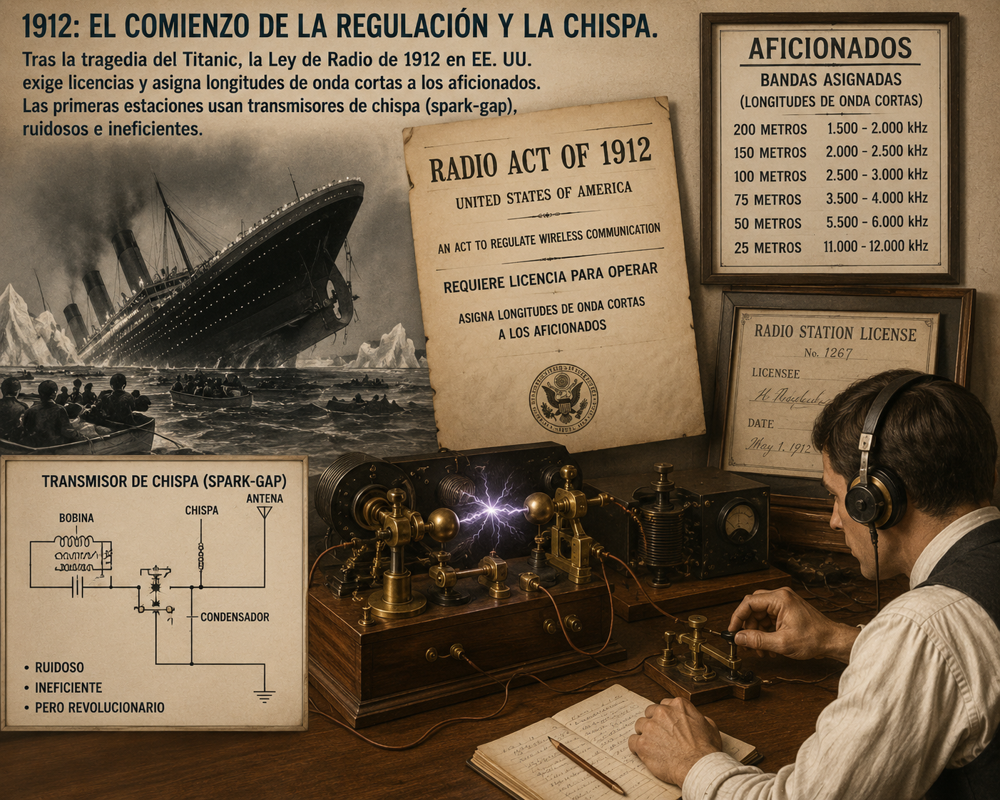
1912 - 1947 Los Pioneros y la Era de las Válvulas.
1912: El cominezo de la Regulación y la Chispa. Tras la tragedia del Titanic, la Ley de Radio de
1912 en EE. UU. exige licencias y asigna longitudes de onda cortas a los aficionados. Las primeras
estaciones usan transmisores de chispa (spark-gap), ruidosos e ineficientes.
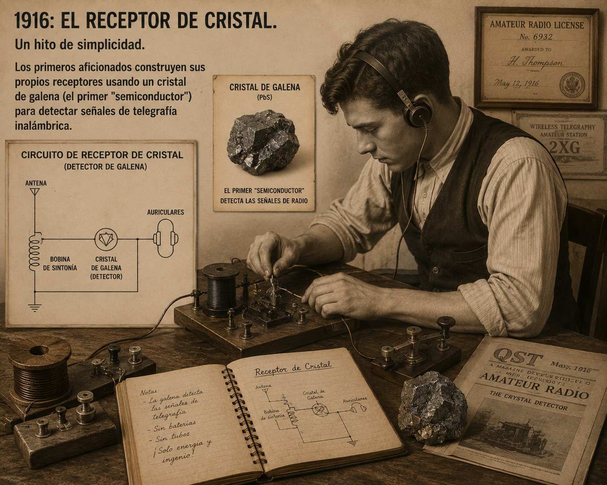
El Receptor de Cristal
1916: El Receptor de Cristal. Un hito de simplicidad. Los primeros aficionados construyen sus
propios receptores usando un cristal de galena (el primer "semiconductor") para detectar señales de
telegrafía inalámbrica.
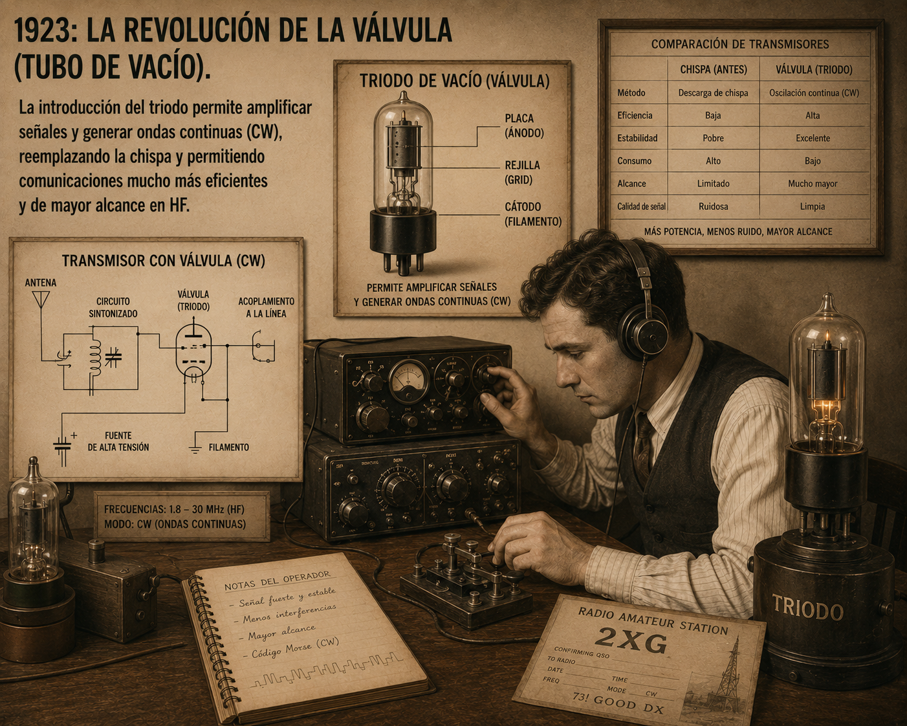
La Revolución de la Válvula (Tubo de Vacío)
1923: La Revolución de la Válvula (Tubo de Vacío). La introducción del triodo permite amplificar
señales y generar ondas continuas (CW), reemplazando la chispa y permitiendo comunicaciones mucho más
eficientes y de mayor alcance en HF.
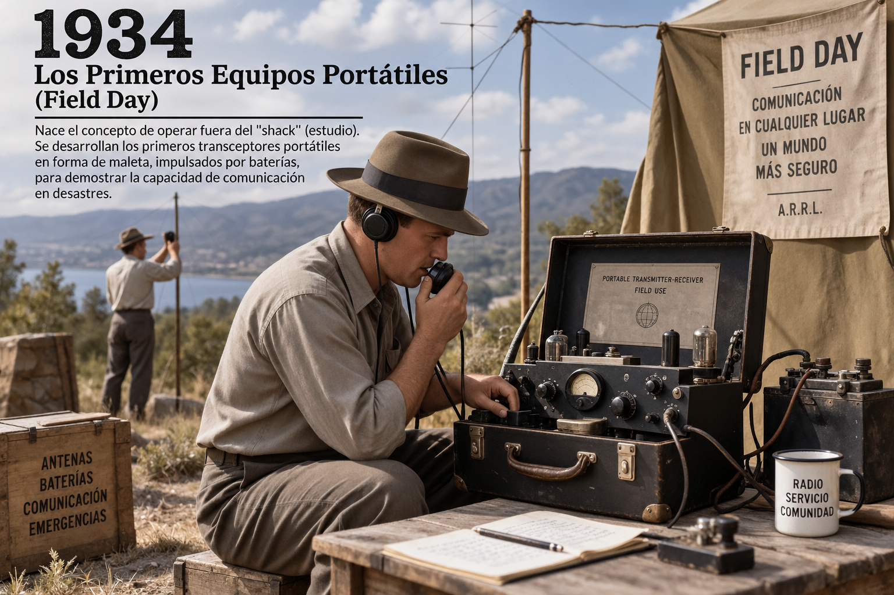
Los Primeros Equipos Portátiles
1934: Los Primeros Equipos Portátiles (Field Day). Nace el concepto de operar fuera del "shack" (estudio).
Se desarrollan los primeros transceptores portátiles en forma de maleta, impulsados por baterías, para demostrar
la capacidad de comunicación en desastres.
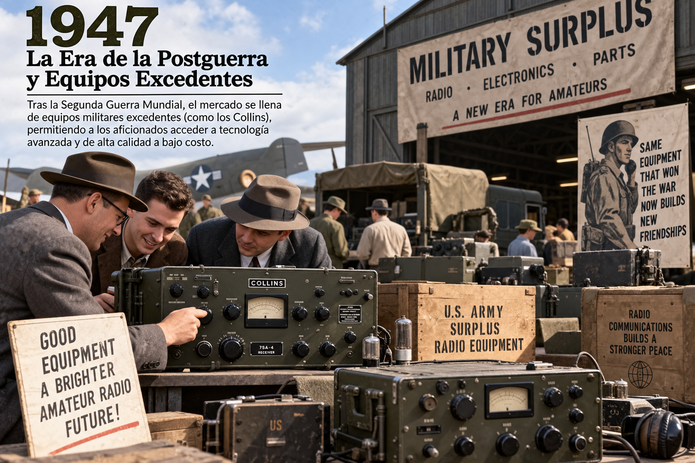
La Era de la Postguerra y Equipos Excedentes
1947: La Era de la Postguerra y Equipos Excedentes. Tras la Segunda Guerra Mundial, el mercado
se llena de equipos militares excedentes (como los Collins), permitiendo a los aficionados acceder a tecnología
avanzada y de alta calidad a bajo costo.
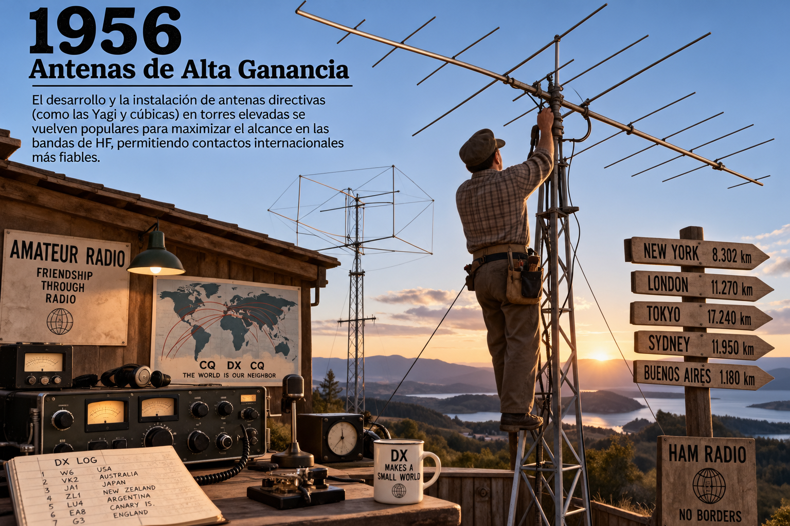
1956 - 1979 Expansión de Modos y la Era Digital
1956: Antenas de Alta Ganancia. El desarrollo y la instalación de antenas directivas
(como las Yagi y cúbicas) en torres elevadas se vuelven populares para maximizar el alcance en las bandas
de HF, permitiendo contactos internacionales más fiables.
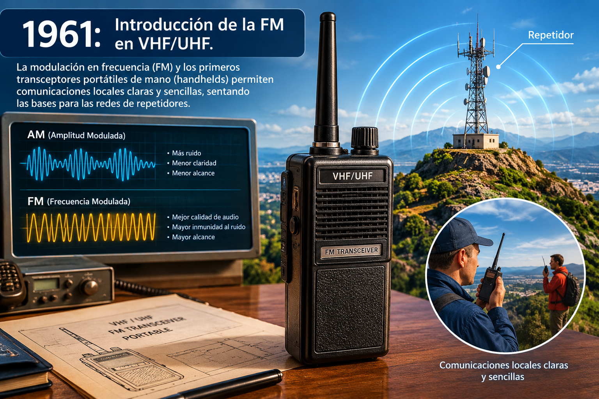
Introducción de la FM en VHF/UHF
1961: Introducción de la FM en VHF/UHF. La modulación en frecuencia (FM) y los primeros
transceptores portátiles de mano (handhelds) permiten comunicaciones locales claras y sencillas,
sentando las bases para las redes de repetidores.
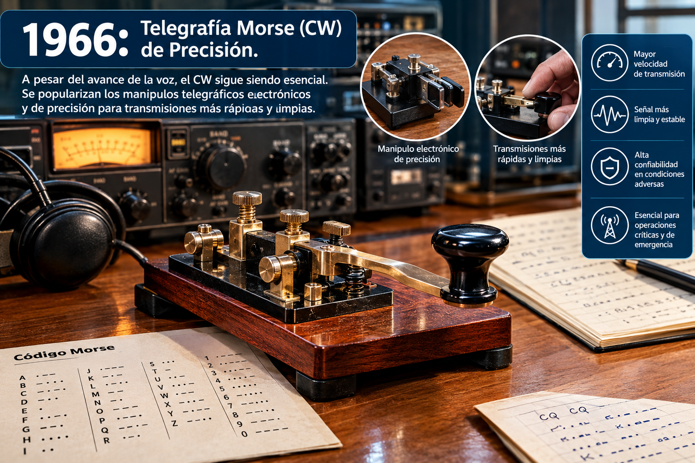
Telegrafía Morse (CW) de Precisión
1966: Telegrafía Morse (CW) de Precisión. A pesar del avance de la voz, el CW sigue siendo
esencial. Se popularizan los manipulos telegráficos electrónicos y de precisión para transmisiones más
rápidas y limpias.
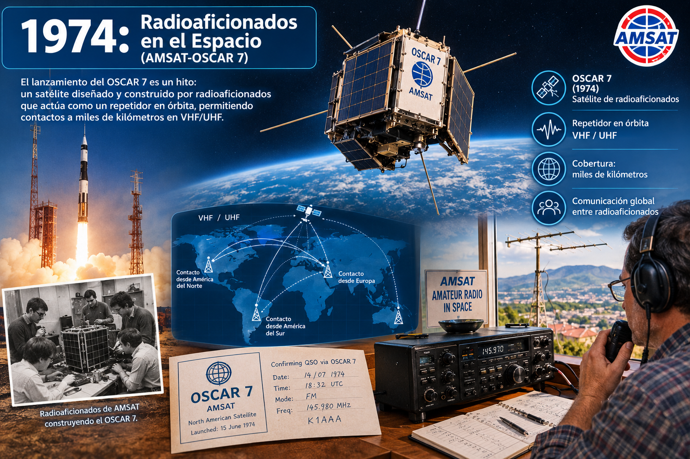
Radioaficionados en el Espacio
1974: Radioaficionados en el Espacio (AMSAT-OSCAR 7). El lanzamiento del OSCAR 7 es un hito: un
satélite diseñado y construido por radioaficionados que actúa como un repetidor en órbita, permitiendo
contactos a miles de kilómetros en VHF/UHF.
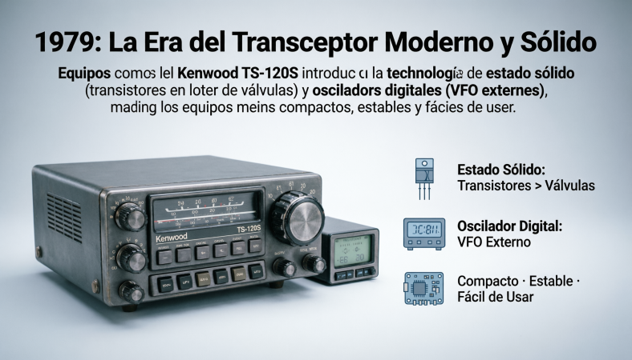
La era del Tranceptor Moderno y Sólido
1979: La Era del La Era del Transceptor Moderno y Sólido. Equipos como el Kenwood TS-120S
introducen la tecnología de estado sólido (transistores en lugar de válvulas) y osciladores digitales
(VFO externos), haciendo los equipos más compactos, estables y fáciles de usar.
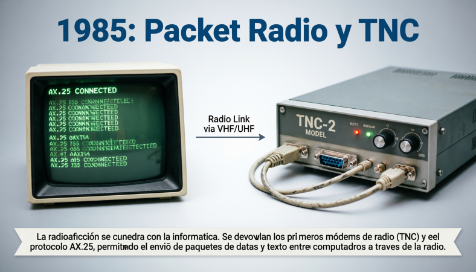
1985 - 2007 La Era Digital y la Integración Informática
1985: Packet Radio y TNC. La radioafición se encuentra con la informática. Se desarrollan los
primeros módems de radio (TNC) y el protocolo AX.25, permitiendo el envío de paquetes de datos y texto
entre computadoras a través de la radio.
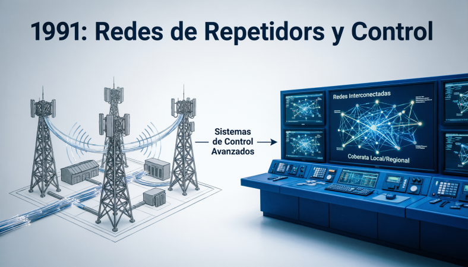
Redes de Repetidores y Control
1991: Redes de Repetidores y Control. La infraestructura local se vuelve compleja. Se instalan
sistemas de control avanzados para redes de repetidores interconectados, expandiendo la cobertura local y
regional.
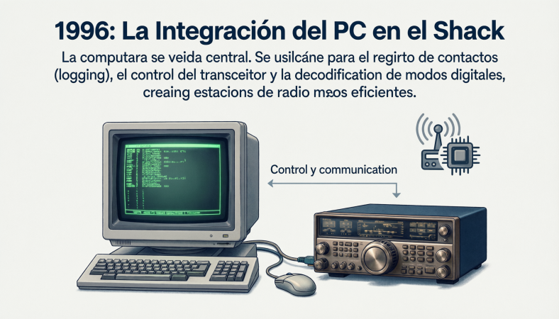
La Integración del PC
1996: La Integración del PC en el Shack. La computadora se vuelve central. Se utiliza para el
registro de contactos (logging), el control del transceptor y la decodificación de modos digitales,
creando estaciones de radio más eficientes.
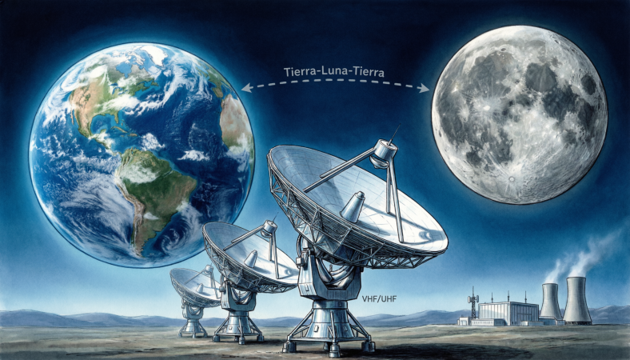
Comunicaciones EME
2002: Comunicaciones EME (Tierra-Luna-Tierra). Una de las disciplinas más desafiantes. Los
aficionados utilizan la Luna como un reflector pasivo para rebotar señales de VHF/UHF, requiriendo
antenas parabólicas gigantes y alta potencia.
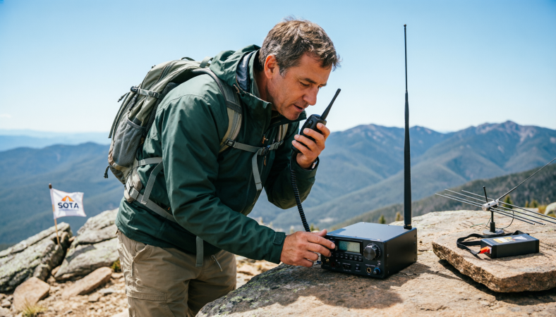
Operaciones Portátiles Modernas
2007: QRP y Operaciones Portátiles Modernas. El desarrollo de transceptores QRP (baja potencia)
ultracompactos y eficientes permite la activación de cimas (SOTA) y parques (POTA), combinando la radio
con el senderismo.
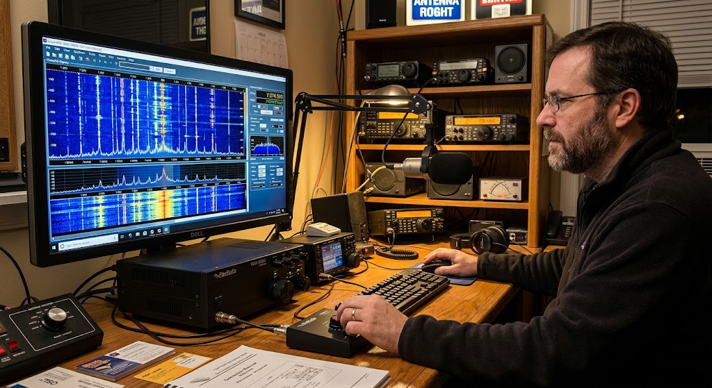
2011 - Hoy Radio Definida por Software y Conectividad Global
2011: Radio Definida por Software (SDR) y Cascada. La mayor revolución moderna. El hardware se
simplifica y el procesamiento de señal se hace en el software. Aparece la visualización de "cascada"
(waterfall), permitiendo "ver" todo el espectro en tiempo real.
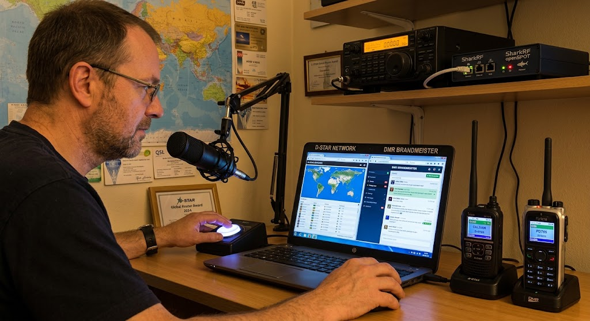
Modos de Voz Digitales
2014: Modos de Voz Digitales (D-STAR, DMR). La voz se digitaliza. Protocolos como D-STAR y DMR
permiten comunicaciones de voz claras, sin ruido y con capacidad de enrutamiento global a través de
internet.
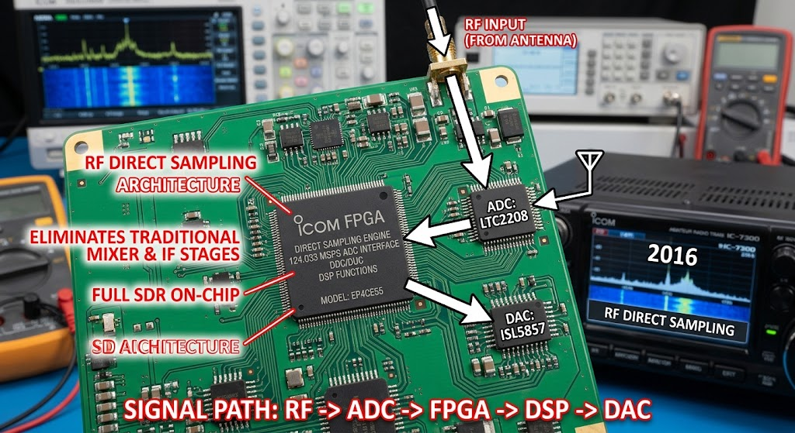
SDR de Muestreo Directo
2016: SDR de Muestreo Directo y FPGAs. La tecnología SDR madura. Equipos como el Icom IC-7300
integran chips FPGA de alta velocidad que muestrean la señal de radio directamente desde la antena,
eliminando etapas de hardware tradicionales.
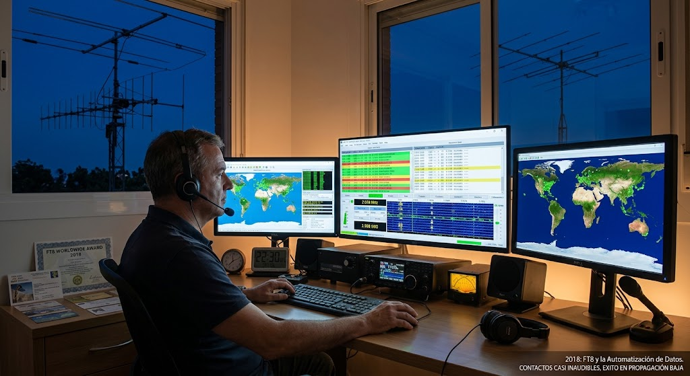
Automatización de Datos
2018: FT8 y la Automatización de Datos. El modo digital FT8 revoluciona el HF. Permite contactos
rápidos y exitosos en condiciones de propagación extremadamente baja, utilizando señales que son casi
inaudibles para el oído humano.
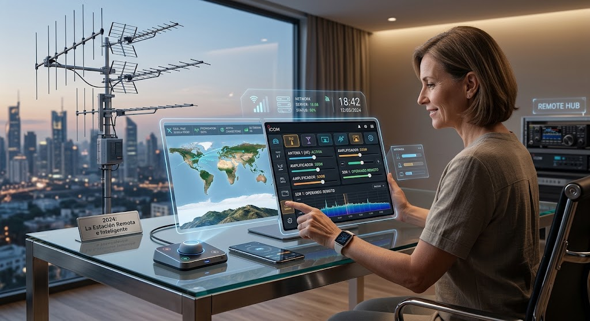
La Estación Remota
2024: La Estación Remota e Inteligente. La era de la conectividad total. Los aficionados
pueden operar sus estaciones de radio complejas de forma remota desde un teléfono o tableta a través de
internet, utilizando interfaces de usuario táctiles e inteligentes.